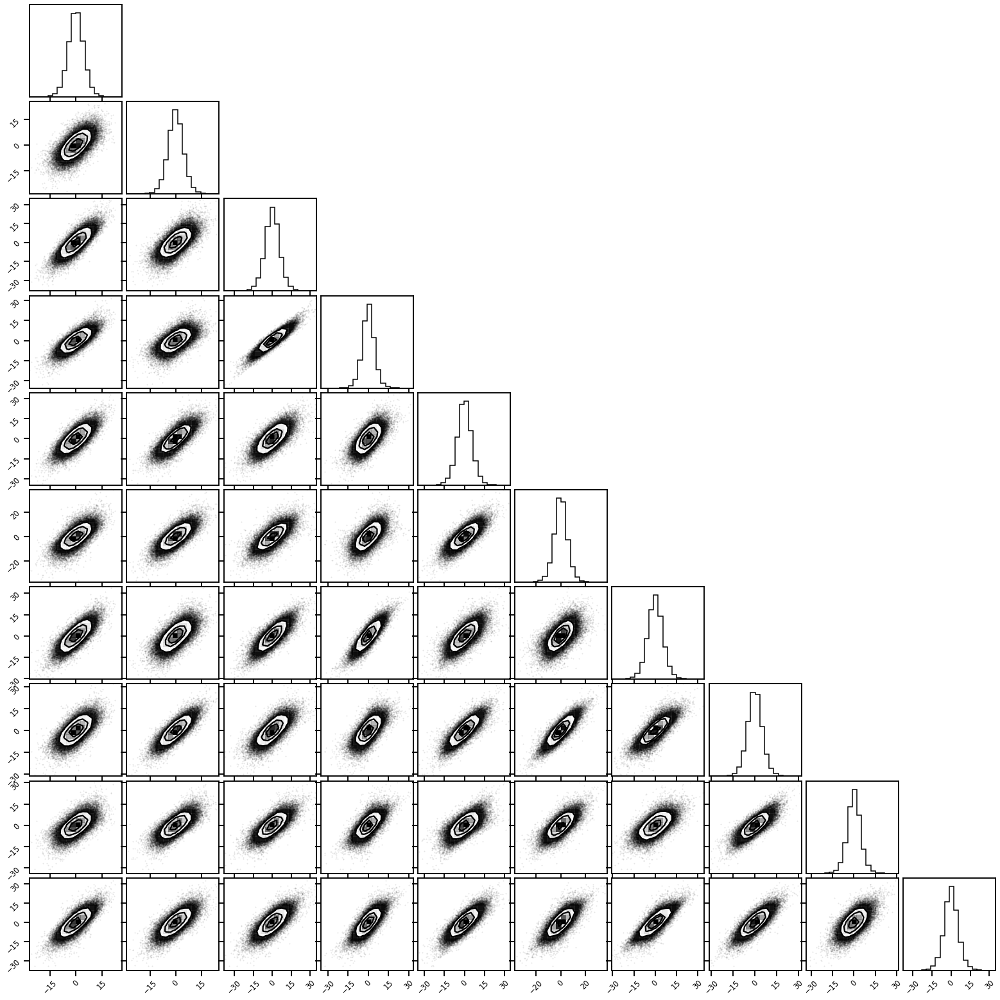
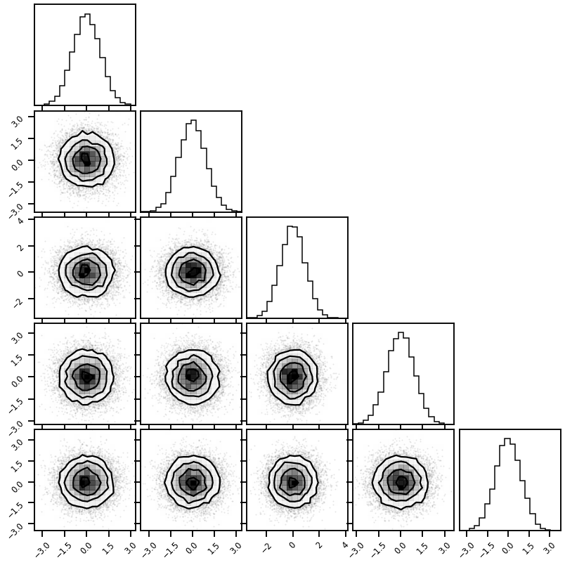
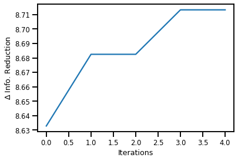

Total Correation with Iterative Gaussianization#
# @title Install Packages
# %%capture
try:
import sys, os
from pyprojroot import here
# spyder up to find the root
root = here(project_files=[".here"])
# append to path
sys.path.append(str(root))
except ModuleNotFoundError:
import os
os.system("pip install chex")
os.system("pip install git+https://github.com/IPL-UV/rbig_jax.git#egg=rbig_jax")
import sys, os
from pyprojroot import here
# spyder up to find the root
root = here(project_files=[".here"])
# append to path
sys.path.append(str(here()))
# jax packages
import jax
import jax.numpy as np
from jax.config import config
import chex
config.update("jax_enable_x64", True)
import numpy as onp
from functools import partial
# logging
import tqdm
# plot methods
import matplotlib.pyplot as plt
import seaborn as sns
sns.reset_defaults()
sns.set_context(context="talk", font_scale=0.7)
%matplotlib inline
%load_ext autoreload
%autoreload 2
Toy Data#
import sys, os
pysim_root = "/home/emmanuel/code/pysim"
sys.path.append(str(pysim_root))
from pysim.data.information.gaussian import (
generate_gaussian_data,
generate_gaussian_rotation_data,
)
from pysim.data.information.linear import generate_linear_entropy_data
from pysim.data.information.studentt import generate_studentt_data
from pysim.information.entropy import marginal_entropy
from pysim.information.histogram import hist_entropy
from typing import NamedTuple
def get_tc_datasets(n_samples, n_features, seed, dataset="gaussian", **kwargs):
if dataset == "gaussian":
res = generate_gaussian_data(
n_samples=n_samples,
n_features=n_features,
seed=seed,
n_base_samples=500_000,
)
elif dataset == "gaussian_rotation":
res = generate_gaussian_rotation_data(
n_samples=n_samples,
n_features=n_features,
seed=seed,
n_base_samples=500_000,
)
elif dataset == "linear_rotation":
f = partial(marginal_entropy, estimator=hist_entropy, bins="sqrt")
res = generate_linear_entropy_data(
n_samples=n_samples,
n_features=n_features,
seed=seed,
marg_h_estimator=f,
estimator_name="histogram",
n_base_samples=500_000,
)
elif dataset == "studentt":
res = generate_studentt_data(
n_samples=n_samples,
n_features=n_features,
seed=seed,
n_base_samples=500_000,
df=kwargs.get("df", 3.0),
)
elif dataset == "cauchy":
res = generate_studentt_data(
n_samples=n_samples,
n_features=n_features,
seed=seed,
n_base_samples=500_000,
df=1.0,
)
else:
raise ValueError(f"Unrecognized dataset.")
return res
# generate data
res_tuple = get_tc_datasets(
n_samples=100_000,
n_features=30,
seed=123,
dataset="linear_rotation",
)
fig = corner.corner(res_tuple.X[:, :10], hist_factor=2)

RBIG Approximation#
from rbig_jax.models import RBIG
import jax.numpy as jnp
def default_rbig_params(data):
X = jnp.array(data, dtype=np.float64)
params = {
"X": X,
# marginal PDF params
"support_extension": 20,
"precision": 100,
"eps": 1e-5,
"method": "histogram",
# Histogram specific params
"nbins": int(jnp.sqrt(X.shape[0])),
"alpha": 1e-5,
# KDE specific params
"bw": "scott",
# info reduction loss parameters
"max_layers" : 250,
"zero_tolerance" : 10,
"p" : 0.25,
# training loop params
"verbose" : True,
"n_layers_remove" : 50,
"interval" : 10,
# everything (makes it fast...)
"jitted" : True,
}
return params
X_g, rbig_model = RBIG(
**default_rbig_params(res_tuple.X)
)
Layer 10 - Cum. Info Reduction: 35.711 - Elapsed Time: 16.4652 secs
Layer 20 - Cum. Info Reduction: 36.053 - Elapsed Time: 27.3335 secs
Layer 30 - Cum. Info Reduction: 36.149 - Elapsed Time: 38.4012 secs
Layer 40 - Cum. Info Reduction: 36.233 - Elapsed Time: 49.5768 secs
Converged at Layer: 44
44 3 50
Final Number of layers: 44 (Blocks: 14)
Total Time: 54.8518 secs
print(f"True Value: {res_tuple.TC:.4f}")
print(f"RBIG Approx: {rbig_model.info_loss.sum():.4f}")
True Value: 49.5507
RBIG Approx: 35.2328
RBIG Model#
from rbig_jax.information.entropy import init_marginal_histogram_entropy
import jax.numpy as jnp
X = jnp.array(data, dtype=np.float64)
nbins = int(jnp.sqrt(X.shape[0]))
H_x = init_marginal_histogram_entropy(nbins=nbins)(X).sum()
from rbig_jax.models import RBIG
import jax.numpy as jnp
X = jnp.array(data, dtype=np.float64)
# a lot of parameters...
support_extension = 20
precision = 100
eps = 1e-5
method = "kde"
# Histogram specific params
nbins = int(jnp.sqrt(X.shape[0]))
alpha = 1e-5
# KDE specific params
bw = "scott"
# info reduction loss parameters
max_layers = 250
zero_tolerance = 10
p = 0.25
# initialize the max layers parameters
verbose = True
n_layers_remove = 50
interval = 10
# everything (makes it fast...)
jitted = True
X_g, rbig_model = RBIG(
X=X,
support_extension=support_extension,
method=method,
precision=precision,
alpha=alpha,
nbins=nbins,
bw=bw,
eps=eps,
max_layers=max_layers,
zero_tolerance=zero_tolerance,
p=p,
verbose=verbose,
n_layers_remove=n_layers_remove,
interval=interval,
jitted=jitted,
)
Layer 10 - Cum. Info Reduction: 6.933 - Elapsed Time: 8.0276 secs
Converged at Layer: 11
11 3 50
Final Number of layers: 11 (Blocks: 3)
Total Time: 8.5098 secs
fig = corner.corner(X_g, hist_factor=2)

rbig_model.info_loss.sum()
DeviceArray(5.93331692, dtype=float64)
fig, ax = plt.subplots()
ax.plot(jnp.cumsum(rbig_model.info_loss))
ax.set(xlabel="Iterations", ylabel="$\Delta$ Info. Reduction")
plt.show()

%%time
X = np.array(data, dtype=np.float32)
tc = rbig_total_correlation(
X=X.block_until_ready(),
zero_tolerance=zero_tolerance,
return_all=False
)
print(f"RBIG TC: {tc:.5f}")
RBIG TC: 34.75812
CPU times: user 16.8 s, sys: 7.33 s, total: 24.1 s
Wall time: 13.1 s